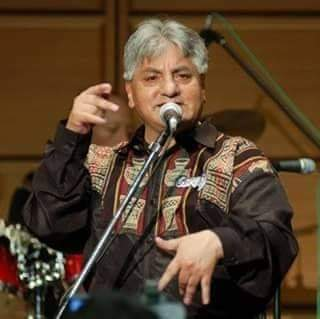
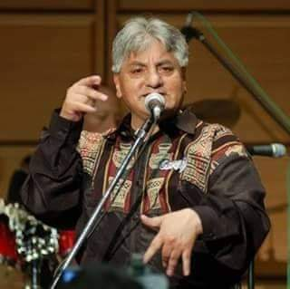

Mi Constelación
En este apartado hablaré de todas las personas como seres que son parte importante de mi vida, diciendo quienes son y como aportaron a mi vida.
Dante Uzquiano mi papá, fue un hombre que me amo y siempre estuvo para mí, me apoyo y siempre cuidó de mí, de los más importantes en mi vida, aún lo extraño y lo recuerdo con amor.
Tatiana Apaza mi mamá, es mi pilar principal, la persona en quien más confío sabe cosas que a nadie más he dicho, ella a estado en momentos críticos para mí y l aprecio muchísimo por eso.
Joaquín Uzquiano mi hermanito, es mi hemrano menor el pequeño de la familia, a quien conozco desde que está en la panza de mi mamá siempre juré protegerlo y apoyarlo, ser una inspiración para él, pero muchas veces él resulta ser inspiración para mí.
Snoopy, mi perrito mayor, tiene 9 años y está conmigo desde que inicie mi etapa de crisis adolexcente, fue uno de mis más grandes soportes, cuando no quería que nadie me hablara el estaba ahí para escuchar y echarse en mi regazo para hacerme olvidar de mis problemas.
Oddy, mi perrito menor, tiene apenas 7 meses, es una bola de pelos juguetona que alegra la casa a donde vaya, me saca sonrisas en momentos cuando necesito despejarme y dejar de pensar en todo lo que pasa.
Pablo Soto, mi mejor amigo, nos conocemos desde hace 8 años y hemos sido inseparables, nos queremos muchísimo y ambos nos conocemos él uno al otro, no sabría qué hacer sin él.
Mi grupo de amigas, Lore, Nahir, Lu y Vane son mis amigas de la universidad, con quienes he pasado mucho en muy poco tiempo, con ellas me divierto, me distraigo, me consuelo cuando necesito uan voz que me ayude a pensar.
Mis abuelitos, han sido mi fuente de esperanza en este mundo, ellos me han demostrado como uno a su tan avanzada edad aún pueden cambiar y mejorar y pienso que todos algún día como ellos nos daremos cuenta de nuestros erroes y cambiaremos y mejoraremos.
.jpeg) 
